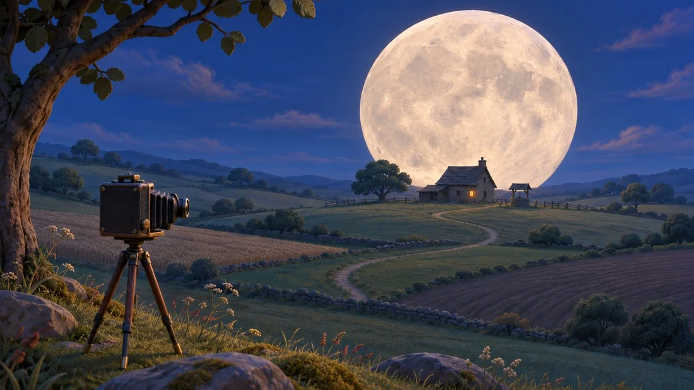

Om bilden
En tänkt gård och en avsiktligt överdriven måne sätter fotografens position i centrum. När kameran kommer längre från huset blir huset mindre i förhållande till månen; ett längre objektiv kan sedan rama in motivet tätare. Bilden visar varken hur stor månen faktiskt såg ut eller när den gick upp på en viss plats.
Halvtimmen · Foto och visuellt berättande
Gör kameran månen större eller huset mindre?
Fördjupning. Månen hänger över ett hus och ser bredare ut än hela taket. Är det supermånen, teleobjektivet eller fotografens placering som gör bilden möjlig? Den viktigaste frågan är var fotografen stod.
I dag, den 24 november, är månen full omkring kl. 15.54 svensk tid enligt NASA:s tabell. Fullmånen infaller nära den del av månbanan där månen är som närmast jorden. Därför upptar den mer plats på himlen än en fullmåne som befinner sig långt bort i sin bana. Men den skillnaden förklarar inte på egen hand varför månen i vissa bilder ser ut att sluka ett helt hus. Klockslaget för fullmånen är dessutom inte detsamma som den lokala månuppgången.
Backa först, zooma sedan
Ställ kameran på ett stativ så att både ett tak och månen syns. Om du zoomar in utan att flytta stativet växer både taket och månen i bilden. Förhållandet mellan deras bredder ändras i praktiken inte. En beskärning gör i det avseendet ungefär samma sak: du tar med mindre av omgivningen, men föremålen i den gemensamma delen behåller sina storleksförhållanden.
Backa i stället bort från huset längs samma siktlinje. Avståndet till huset ökar märkbart; avståndet till månen ändras försumbart. Huset blir därför mindre i förhållande till månen. Med ett längre objektiv kan du sedan fylla bildrutan igen. Objektivet gör den nya kompositionen möjlig. Det var förflyttningen som ändrade perspektivet.
En tredje effekt sitter hos betraktaren
Månen kan dessutom se större ut med blotta ögat nära horisonten. Det kallas månillusionen och är inte samma sak som att månen är närmare jorden. NASA visar ett enkelt jämförelseprov: fotografera månen lågt och sedan högt samma kväll med samma inställningar och jämför skivans bredd i pixlar. Den horisontella bredden är ungefär densamma; atmosfärisk brytning kan däremot platta till den låga månen på höjden.
Om himlen är klar kan du testa perspektivet med en byggnad på avstånd. Eller prova samma princip inomhus med en kaffekopp framför en väggklocka. Zooma först från samma plats. Backa sedan och komponera om. Titta på vad som händer med storleksförhållandet mellan de två motiven.